Lightweight Little '59 Strat
DIY Guitar Project
Since I experience growing neck pain when playing electric guitar for extended periods, I longed for a
lightweight guitar, ideally with a new set of different sounding pickups. I rediscovered my very first
electric guitar—a blue Fender Stratocaster Squier—which is not only very light but also plays well and has
surprisingly good intonation. My goal was to achieve a wooden vintage look similar to Rory Gallagher's super
heavy relic Stratocaster with the sound of a Humbucker.
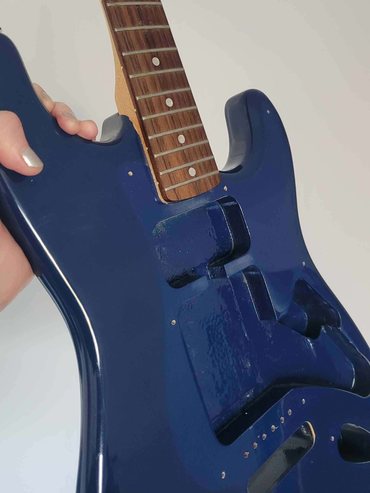
And so I disassembled the guitar, sanded off the blue finish, stained the wood with a medium-brown stain, and
sealed the finish with linseed oil. I also sanded down the chrome surfaces of some of the small metal parts
and
then put them in a vinegar steam bath to corrode their surface in order to achieve the worn look.
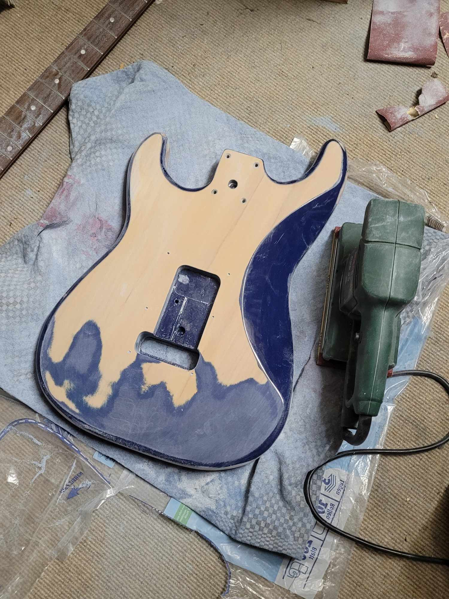
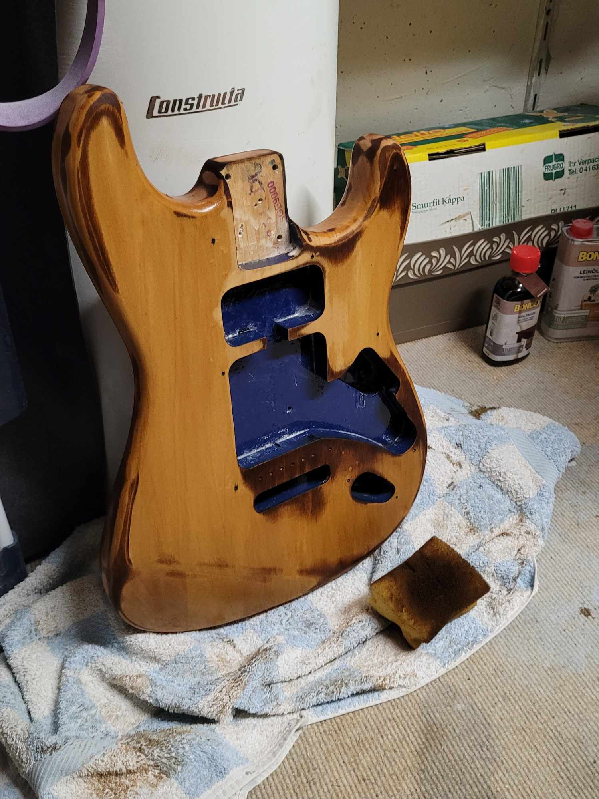
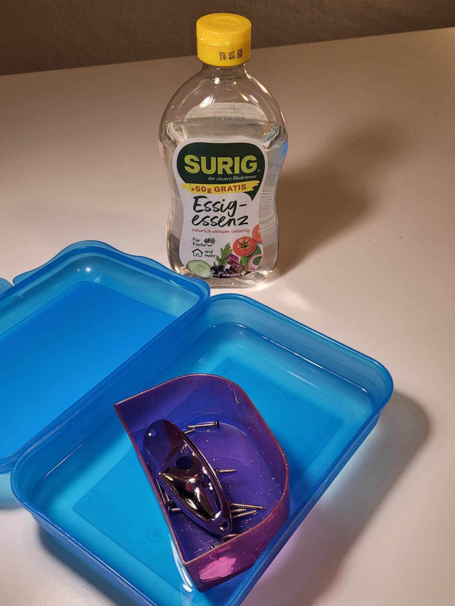
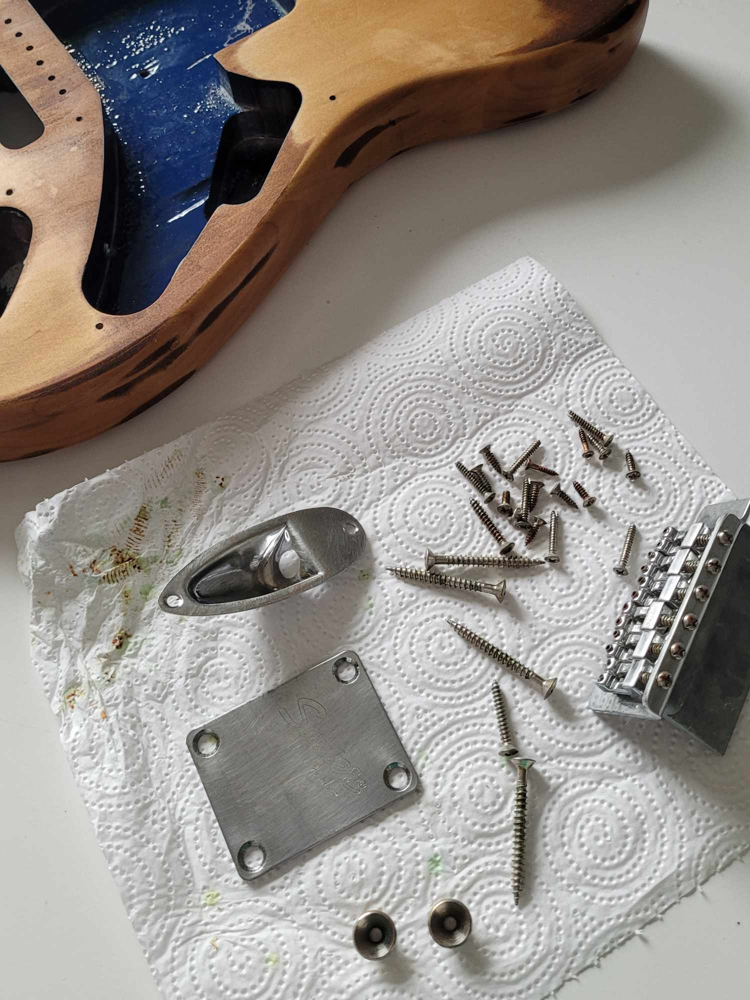
I decided to get the popular Seymour Duncan Little ‘59 Humbucker pickup built specifically for strats and a
push/pull potentiometer to split the humbucker into a single-coil, if needed. Once the guitar was ready for
re-assembling, I started soldering the electronics. First, I removed all of the Squier’s original low-quality,
mediocre sounding single-coil pickups. For the neck and middle pickups, I used the left-over single-coils of
my (unfortunately too heavy) American Standard Stratocaster, in which I installed the Fender Custom ML Ultra
Noiseless single-coil pickup set earlier (they sound literally ultra clean, amazing). Installing the Little
'59 as the bridge pickup with the push/pull pot was—combined with my amateur soldering skills—the biggest
challenge of this project. I had to carve a slot into the guitar body to make the push/pull pot fit, and after
some trial and error with the soldering, I finally managed to get all the pickups working.
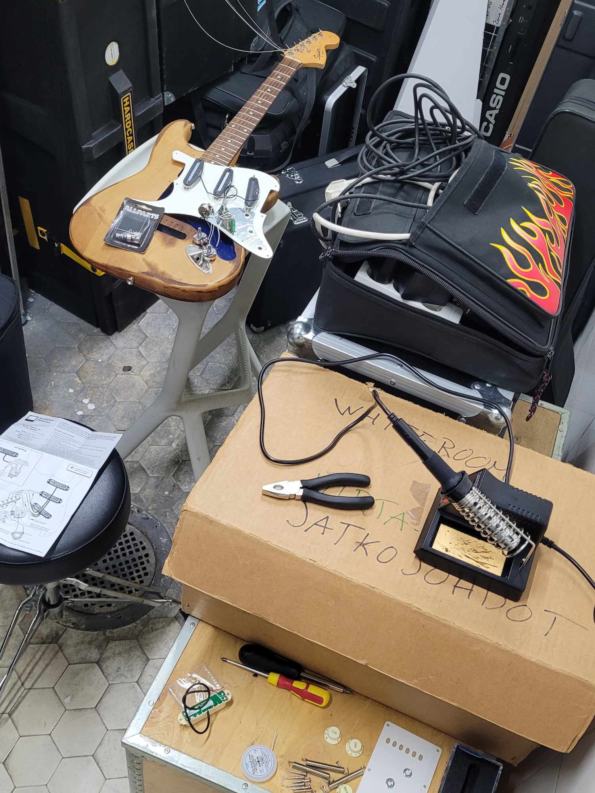
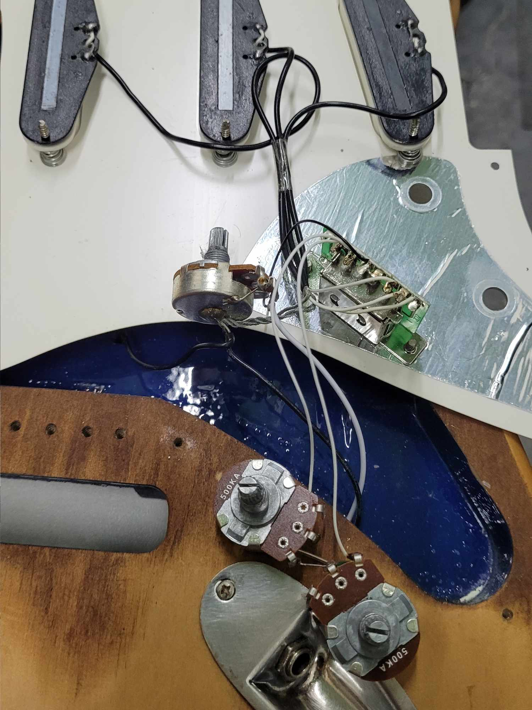
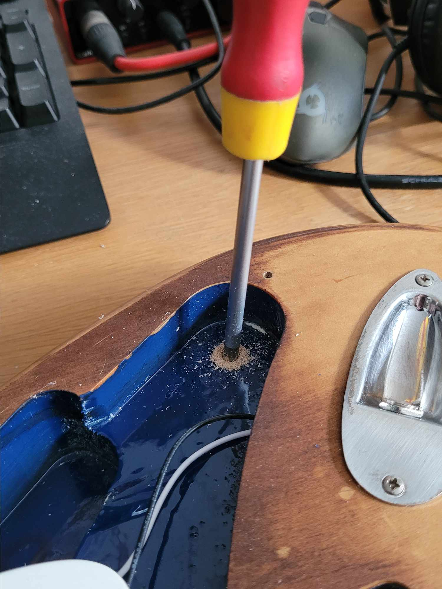
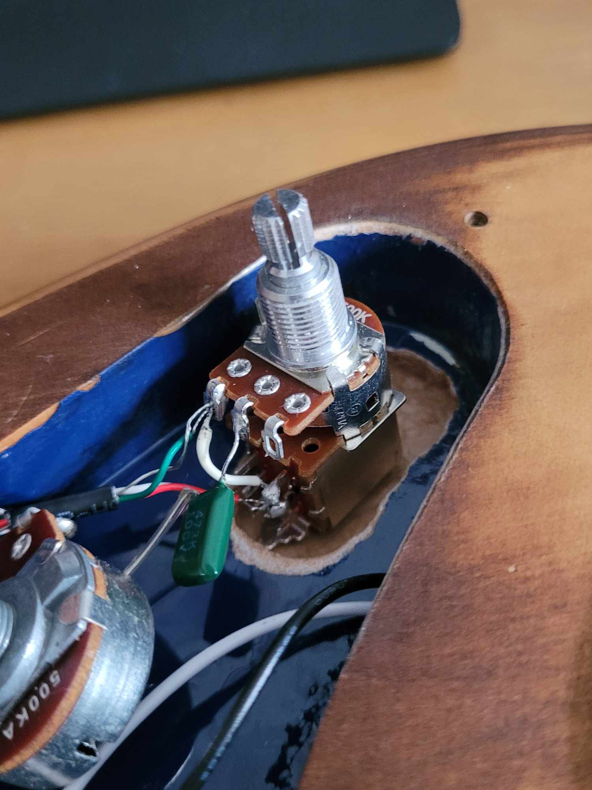
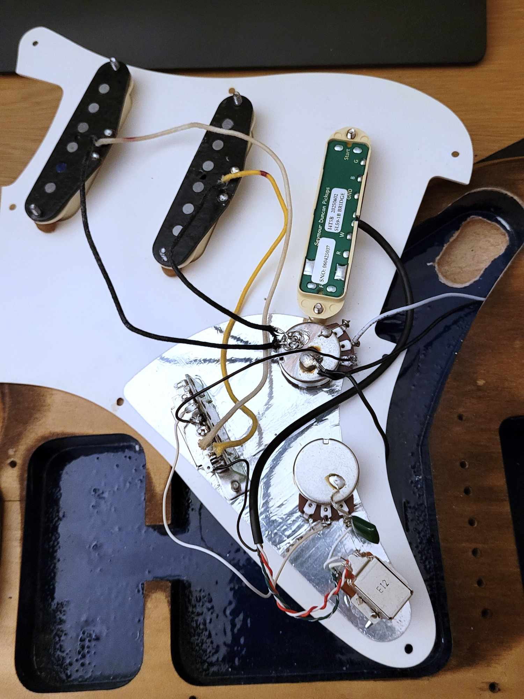
My new guitar is not only light, but looks cool and sounds fantastic, too. Worth the struggle. Good job, Tino.
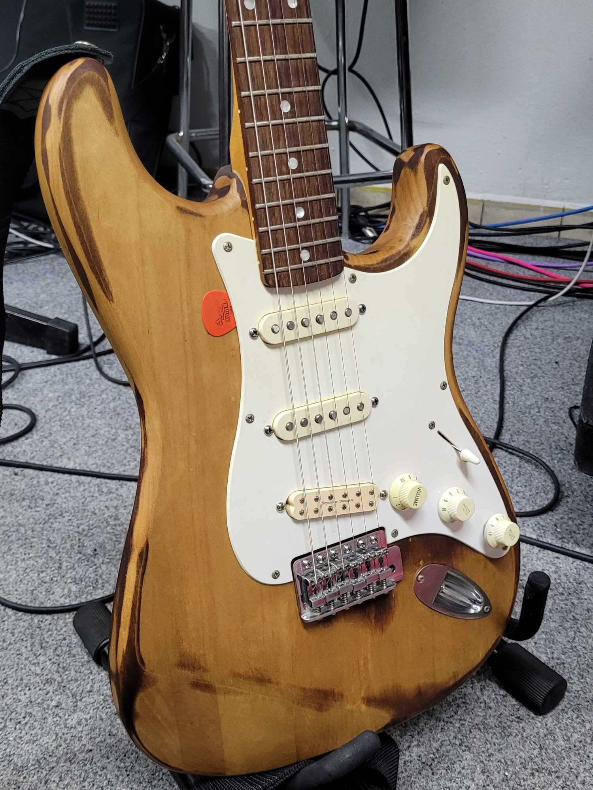
Year
2026
Type
DIY Guitar Project